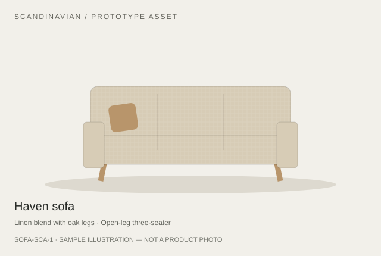

Open in Safari on your iPhone. Tap the sofa below to open the product-specific SOFA-SCA-1 USDZ.

The image is the existing illustration; the link loads the processed Haven USDZ, not the shared sample.
Prototype model: approximately 2.10 × 0.801 × 0.791 m. Catalogue design targets: 210 × 82 × 92 cm; only width was matched uniformly. Real product dimensions unavailable. No furniture-fit guarantee.
iPhone testing has not yet passed. This page is a manual test entry point only.
Modern three-seater sofa (Free) by MaryKD, CC BY 4.0. RumAI modified materials, orientation, geometry optimisation and uniform prototype scale; converted to USDZ.